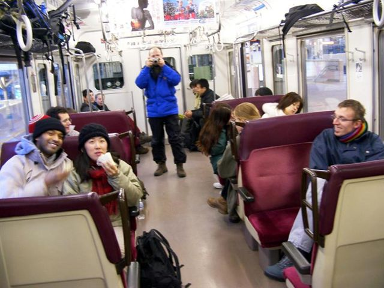
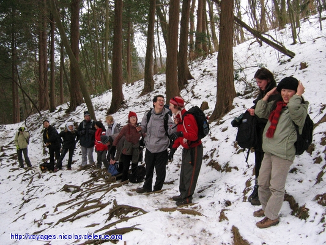
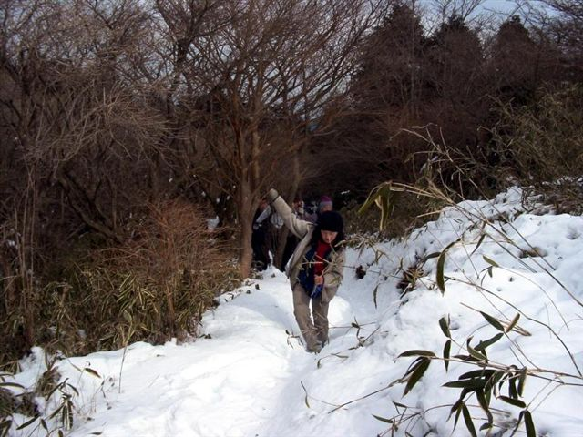
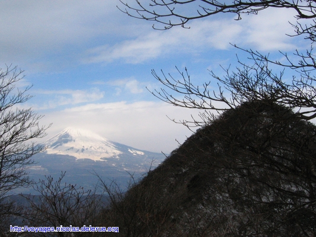
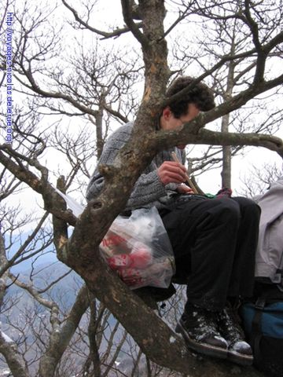
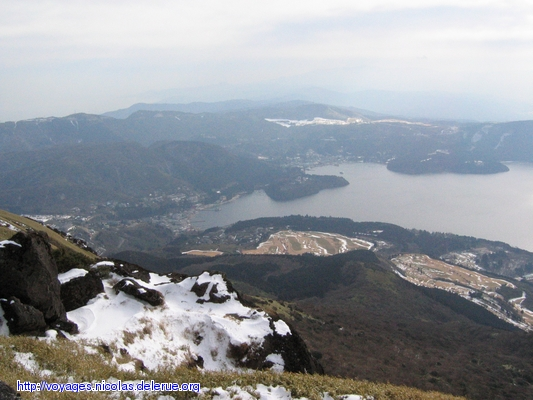
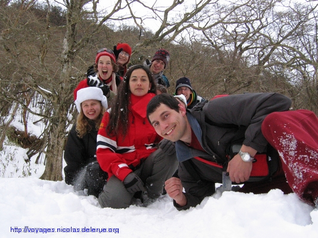
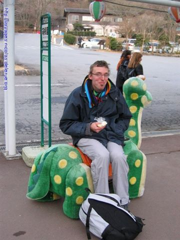
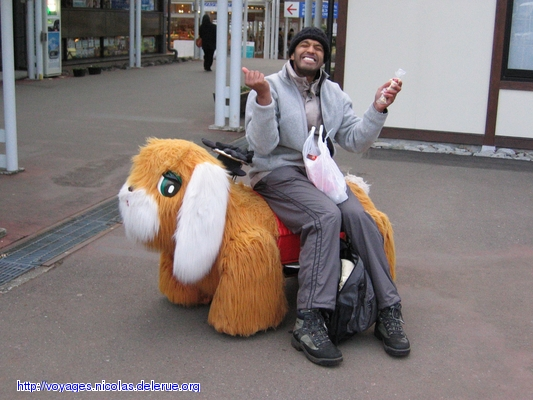
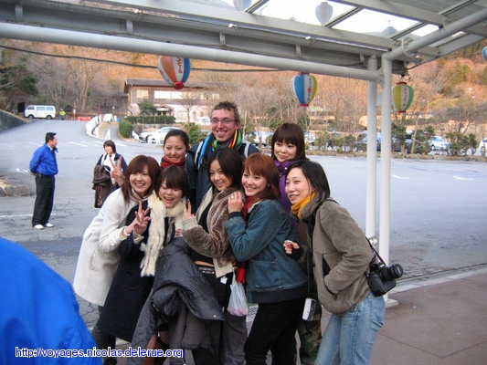

|

start from Tokyo - two men shot each other |

Group picture (almost complete) |

snow was soft but deep |

Fuji-san |

This is the year of the monkey |

Lake |
|

The fast hiking group in one row |

I have found an easier solution rather than being a monkey |
|

Damn, I have no coin of 100 yen left for the lift |

This guy has a secret. |